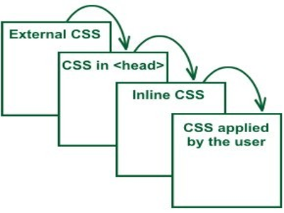

Въведение
в
CSS
Created for

Какво е CSS?
CSS = Cascading Style Sheets.
Съвкупност от форматиращи препоръки, правила, които указват КАК да се представи документа от браузера.
Cascading?
Комбиниране (каскадно) на различни стилови шаблони.
Защо CSS?
Разделяне на отговорности (Separation of concernrs)
- HTML:
- Съдържанието на документа.
- КАКВО ще се изобрази.
- Структура и семантика на елементите.
- CSS:
- Оформлението на документа.
- КАК ще се изобрази.
- Форматиране и подреждане на елементите
Преносимост на документа между различните видове медии: екран (PC, tablet, phones, ...), принтер, проектор, аудио браузер, и пр.)


Структуриран, концентриран единствено върху съдържанието, четим код.
<body bgcolor="#000000">
<div border="1" bordercolor="red">
<p><font face="verdana" color="blue"> Това е параграф оцветен в синьо !</font></p>
</div>
</body>
VS.
<body>
<div>
<p>Това е параграф оцветен в синьо !</p>
</div>
</body>
Как?
Inline CSS
Чрез атрибутa style за всеки един HTML елемент:
<tag style="[property : value;]+">
Например:
<p style="color : green;">текст в зелено</p>
Предимства? Недостатъци?
Internal CSS
В HEAD секцията, в ‘style’ елемента:
<head>
<style type=”text/css”>
p {
text-indent:5%;
color : black;
}
h2 {
text-indent:5%;
font-size: 1.5em;
color : red;
}
</style>
</head>
Предимства? Недостатъци?
External CSS
Чрез дефиниране на CSS правилата в отделен файл ( *.css ). Свързва се с документа посредством елемента link в заглавната част на документа:
<head>
<link rel=StyleSheet href="css/basic.css " type="text/css" media=screen >
</head>
Предимства? Недостатъци?
CSS правила - синтаксис
Общ синтаксис на едно CSS правило:
selector {
property1: value1;
property2: value2;
...
}
Общ синтаксис на едно CSS правило:

Селекторите могат да се групират - отделят се със запетайка ‘ , ’
h2,h4 {
color: white;
}
Декларациите също могат да се групират – отделят се с точка и запетая ‘ ; ’
h4 {
background-color: red;
color: white;
border: 5px solid gray;
}
' ; ' след последна декларация не е задължителна, но е добра практика да се поставя винаги – улеснява редактирането на кода.
Пример
БялоЗеленоЧервено
.flag{
display: inline-block;
line-height: 2em;
width: 20em;
border: .2em solid #333;
}
.flag>span{
display: block;
}
.bg>span:nth-child(1){
background: white;
color: #CCC;
}
.bg>span:nth-child(2){
background: green;
color: #CCC;
}
.bg>span:nth-child(3){
background: red;
color: #CCC;
}
Коментари в CSS
/*- за начало на коментар*/- за край на коментар
Пример:
/*~~~~~~~~~~~~~~~~~~~~~~~~~~~~~~~~~~~~
Пример за многоредов коментар
~~~~~~~~~~~~~~~~~~~~~~~~~~~~~~~~~~~~~*/
/*Main_Sections_Title*/
section>h2{
font-size: 1em;
-webkit-border-radius: 12px; /* Safari 3-4 */
-moz-border-radius: 12px; /* Firefox 3.6 and below */
border-radius: 12px; /* modern browsers */
/*background: red;*/
}
Каскадност на CSS правилата
Специфичност (specificity)
Наследяване (inheritance)
Местоположение (location)
Специфичност (specificity)
Определя се от типа на селектора - колкото по-специфичен е един селектор, с толкова по-висок приоритет ще бъде той.
(ще разгледаме подробно в темата за CSS селектори)
Наследяване (inheritance)
Дървовидна структура на HTML документ

От елементи-родители в HTML дървото
body{
/*Всички елементи в body, ще се изобразят с черен на цвят шрифт*/
color: black;
}
/*Всички елементи в div, ще се изобразят с бял на цвят шрифт*/
div{
color: white;
}

Наследяване (inheritance)
Не всички свойства се наследяват!
Експериментирайте със следния код:
body{
background-color: lightblue;
color: black;
}
div{
background-color: red;
color: white;
/*забележете дали свойството border се наследява, така както color*/
border: 5px solid green;
}
Заглавие
текст в параграф...
- Елемент1
- Елемент2
- Елемент3
друг параграф...
Местоположение (location)
- Стил, прилаган от Браузера.
- Потребителски стил на Браузера (“reader/user style sheet”)
- Стил, зададен в HEAD секцията:
- Външен стил, свързан със документа чрез елемента link.
- Импортиран стил в документа, добавен чрез @import функцията)
- Вграден в документа стил (Embedded style sheets) чрез елемента style
- Инлайн стил, добавен към елемент чрез атрибута му style в отварящия таг
- Правило, маркирано като !important от автора на страницата.
- Правило, маркирано като !important от потребителя
Пример за !important
p{
background: red !important;
color: white;
}
текст в параграф...
Как ще бъде оцветен параграфа и текста в него?
Резултат...